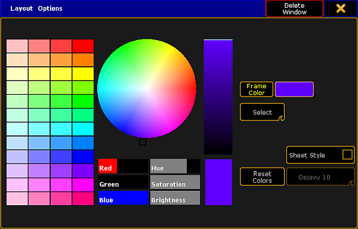

Important:
This section comprises the description of functions specific for the layout pool. Please see all the general settings in Adjust pool options.
Open the Options
Open the layout pool first. For more information on how to open the layout pool see Create a layout.
Then, tap in the upper left corner of the layout pool.
The option dialog opens.

Layout pool options
To adjust the frame color, reset colors or to apply a different style and font size see Adjust pool options.
To display the single layouts in the layout view, tap and swipe the button to Select below the button Frame Color.
If you want to set the layout for the bitmap fixture, tap and swipe the button to At below the button Frame Color.
If you have adjusted the options of the layout pool to your liking, leave the options:
-Tap in the upper right corner of the dialog and the dialog closes.
-If you would like to close the layout pool altogether, tap Delete Window.